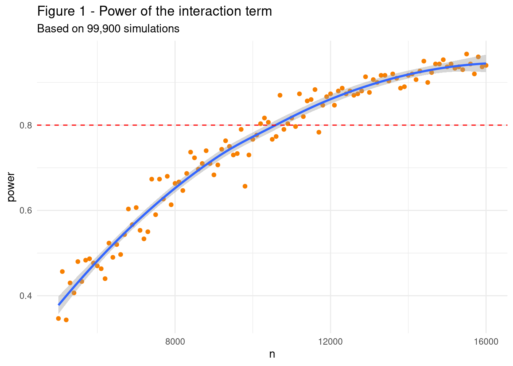

library(tidyverse) # data manipulationlibrary(broom) # tidy output tablelibrary(purrr) # replace for looplibrary(furrr) # increase purrr's performance using multicore processing## Parameters #############################################################in_alpha <-0.005# Threshold for significance level (Type I error prob.)in_sample <-seq(5000, 16000, 100) #Sample sizes with min, max and incrementin_cb_maj <-0.4# Callback rate for majority group# Effect size (ES) for main treatment using Cohen's h formulain_es_main <--0.15# Second treatment effect size (half of the main effect)in_es_sec <- in_es_main# Interaction effect size (1/3 of the main effect)in_es_interact <- in_es_main/2*-1in_ngroups <-3# total number of ethnic groups in the main treatmentin_ncountries <-7# number of countries in the sample of the interaction effectin_reps <-150# number of repetitions for each sample size
Code
# Estimation ################################################################### Function for simulation ===============================================sim_data <-function(n, base_cb, ngroups, treat1, treat2, interact){# a) Create the two variables, and assign treatment distribution (probabilities) in last part dat <-tibble(minority =sample(c('maj', paste0('min', 1:(ngroups-1))), n, replace =TRUE, prob =c(rep(1/ngroups, ngroups))),second_treat =sample(c(0, 1), n, replace =TRUE, prob =c(0.5, 0.5)) )# b) Create the outcome based on probabilities dat$p <- base_cb + (treat1 * (dat$minority !='maj')) + (treat2 * dat$second_treat) + (interact * (dat$minority !='maj') * dat$second_treat)# c) To determine outcome: first create a random number between 0 and 1,# then, if that number is above "p", we assign a callback ("1") dat$random <-runif(nrow(dat), min =0, max =1) dat$outcome <-ifelse(dat$random < dat$p, 1, 0)# d) Estimate regression model, tidy it, save output with sample size. m1 <-lm(outcome ~ minority * second_treat, data = dat) m1_out <-tidy(m1) m1_out$n <- nreturn(m1_out)}# Creating data frame with simulated data ===================================tb_params <-data.frame(expand.grid(n = in_sample,base_cb = in_cb_maj,ngroups = in_ngroups,treat1 = in_es_main,treat2 = in_es_sec,interact = in_es_interact))tb_duplicated <-replicate(in_reps, tb_params, simplify =FALSE)tb_final <-do.call(rbind, tb_duplicated)# Apply function to simulated data =======================================set.seed(13) # replicate resultsplan(multisession, workers =5) # number of cpu cores for parallel process.tb_result <- furrr::future_pmap_dfr(tb_final, sim_data, .progress =TRUE, .options =furrr_options(packages ="broom", seed =TRUE))
Code
## Results #################################################################### Define significance ===================================================tb_result$significant <-if_else(tb_result$p.value < in_alpha, 1, 0)# Group and summarise the results =======================================tb_summary <- tb_result |>filter(str_detect(term, ':')) |># only interaction termsgroup_by(n) |>summarise(power =mean(significant), .groups ="drop")# Recording key numbers for reporting =================================sample_result <- tb_summary |>filter(power >0.8) |>summarise(pooled =min(n),country =round(min(n)/in_ncountries))
1 Summary
We estimated power as a function of a given i) sample size, ii) significance level, and iii) effect size for a pooled sample of all participating countries. For the individual simulated sample sizes, we used a sequence of different sizes varying from 5,000 to 16,000. The significance level was determined as 0.005 following recent recommendations for claims of discovery of new effects [1]. We assumed a baseline callback rate of 0.4 and a conservative treatment effect size of -0.15 based on previous studies [2–4]
Apart from these generic parameters, we also incorporated specific features from the EqualStrength research design. First we included a second treatment postulated to have the same size of the effect of the main treatment (-0.15). Finally, we also incorporated to the model an interaction term between the two treatments with an effect size assigned as half of the effect size of the main treatment (0.075).
The estimated sample size results from linear models [5] of simulated datasets using different combinations of parameters present in the EqualStrength research design. Following this method, we estimate a minimum sample size of 10,200 observations for each domain in each of the 7 countries participating in the pooled sample. This sample size is sufficient to get a power equal or greater than 80% if we observe an effect size of the interaction term equal or greater than 0.075.
2 Introduction
In this note, we describe the analysis used to estimate the statistical power for EqualStrength tests across different sample sizes. Power is defined here as the probability of rejecting the null hypothesis when it is, in fact, false. In other words, in the context of the EqualStrength project, we are using different parameters to estimate the probability of correctly accepting the hypothesis of discrimination when there is in fact discrimination. This analysis is fully reproducible and the code is available at https://github.com/equalstrength/power_calc
2.1 Limitations
As with any power analysis, the scope of this analysis is limited to the statistical significance of the test only. Apart from the general limitations of the NHST approach [6], this analysis ignores the probability of the estimate being in the wrong direction or exaggerated [7].
3 Main parameters
We estimate power as a function of a given i) sample size, ii) significance level, and iii) effect size in the context of each participating country.
For the sample size, we use a sequence of different sizes varying from 5000 to 1.6^{4}. The significance level was determined following recent recommendations for claims of discovery of new effects [1]:
Alpha: 0.005.
The effect size can be specified either from previous studies or by assuming a “minimum effect that would be substantively important” [7] or interesting [8]. An overview of recent studies indicate a substantial variation of effect sizes depending on the setting and country1. Several studies also highlight that any postulation of effect sizes based on previous studies is severely limited by publication bias, population effect size heterogeneity, and model error [10], which can lead to “overly optimistic” expectations [8]. Here we posit the following baseline callback rate and effect size for the main treatment:
Majority group call-back rate: 0.4
Effect size of the main treatment: -0.15.
4 Specific parameters
In addition to the previous parameters which are commonly found in similar power analyses, we incorporate specific features from the EqualStrength research design. First we included a second treatment and an interaction term between the two treatments.
The effect size of the second treatment is postulated to be half the same size of the main treatment (-0.15). Furthermore, the interaction effect size is assigned as half of the effect size of the main treatment, which results in the following value:
Interaction effect size: 0.075.
5 Simulation
Using a series of simulated data, it is possible to calculate the power with additional parameters. The estimates result from linear models [5] of simulated datasets incorporating different combinations of parameters present in the EqualStrength research design. Here we also get estimates for main treatments using two minority groups in addition to the majority group. The power is calculated as the proportion of times across all simulations in which the interaction term p-value was higher than 0.005.
Code
tb_summary |>ggplot(aes(x = n, y = power))+geom_point(color ="#F77F00") +geom_smooth(method ="loess") +geom_hline(yintercept =0.8, color ="red", linetype =2) +labs(title ="Figure 1 - Power of the interaction term", subtitle =paste0("Based on ", format(nrow(tb_result), big.mark=","), " simulations"))+theme_minimal() +theme(legend.position ="bottom")

Following this method, we estimate a minimum pooled sample size of 10,200, which means 1,457 observations for each domain in each of the 7 countries. This sample size is sufficient to get a power equal or greater than 80% if we observe an effect size of the interaction term equal or greater than 0.075.
6 Hungary, Czechia and national sub-groups
The pooled sample detailed in the previous sections does not include the data that will be collected in two countries (Hungary and Czechia) considering cross-comparability issues for the ethnic minority groups. Therefore, a different power analysis was conducted for these two countries. In this separate analysis, the interaction term is not included in the simulations. Therefore, the power is calculated as the proportion of times in which both effects are statistically significant.
Code
in_sample_country <-seq(200, 1500, 50) #Sample sizes with min, max and increment# Function for simulation =============================================== sim_data_country <-function(n, base_cb, ngroups, treat1, treat2){# a) Create the two variables, and assign treatment distribution (probabilities) in last part dat <-tibble(minority =sample(c('maj', paste0('min', 1:(ngroups-1))), n, replace =TRUE, prob =c(rep(1/ngroups, ngroups))),second_treat =sample(c(0, 1), n, replace =TRUE, prob =c(0.5, 0.5)) )# b) Create the outcome based on probabilities dat$p <- base_cb + (treat1 * (dat$minority !='maj')) + (treat2 * dat$second_treat)# c) To determine outcome: first create a random number between 0 and 1,# then, if that number is above "p", we assign a callback ("1") dat$random <-runif(nrow(dat), min =0, max =1) dat$outcome <-ifelse(dat$random < dat$p, 1, 0)# d) Estimate regression model, tidy it, save output with sample size. m1 <-lm(outcome ~ minority + second_treat, data = dat) m1_out <-tidy(m1) m1_out$n <- n return(m1_out) }# Define the parameters data frame tb_params_country <-data.frame(expand.grid(n = in_sample_country,base_cb = in_cb_maj,ngroups = in_ngroups,treat1 = in_es_main,treat2 = in_es_sec) )# Duplicate the parameters data frame tb_duplicated_country <-replicate(in_reps, tb_params_country, simplify =FALSE) tb_final_country <-do.call(rbind, tb_duplicated_country)# Apply function to simulated dataset.seed(13) # replicate resultsplan(multisession, workers =5) # number of cpu cores for parallel process. tb_result_country <- furrr::future_pmap_dfr(tb_final_country, sim_data_country, .progress =TRUE, .options =furrr_options(packages ="broom", seed =TRUE))# Define significance tb_result_country$significant <-if_else(tb_result_country$p.value < in_alpha, 1, 0)
The parameters are the same as the ones described previously except for the range of sample sizes simulated that varied from 200 to 1500.
As a result, the minimum sample size for which both treatment effects have a power equal or greater than 80% is equal to 650. As this calculation considers two minority groups, this also means that if a country from the pooled sample wishes to compare a subgroup within the two minority groups, this subgroup should have at least 217 observations.
7 Custom analysis
These calculations can be reproduced or replicated with different parameters using this website for the pooled sample or this website for the individual country sample.
The code to reproduce the analyses detailed in this note is available in this repository.
8 References
1.
Benjamin DJ, Berger JO, Johannesson M, Nosek BA, Wagenmakers E-J, Berk R, et al. Redefine statistical significance. Nature Human Behaviour [Internet]. 2017 Sep [cited 2023 Sep 7];2(1):6–10. Available from: https://www.nature.com/articles/s41562-017-0189-z
2.
Zschirnt E, Ruedin D. Ethnic discrimination in hiring decisions: A meta-analysis of correspondence tests 1990–2015. Journal of Ethnic and Migration Studies [Internet]. 2016 May [cited 2023 Sep 20];42(7):1115–34. Available from: http://www.tandfonline.com/doi/full/10.1080/1369183X.2015.1133279
3.
Larsen EN, Di Stasio V. Pakistani in the UK and Norway: Different contexts, similar disadvantage. Results from a comparative field experiment on hiring discrimination. Journal of Ethnic and Migration Studies [Internet]. 2021 Apr [cited 2023 Jul 10];47(6):1201–21. Available from: https://doi.org/10.1080/1369183X.2019.1622777
4.
Lippens L, Vermeiren S, Baert S. The state of hiring discrimination: A meta-analysis of (almost) all recent correspondence experiments. European Economic Review [Internet]. 2023 Jan [cited 2023 Sep 20];151:104315. Available from: https://linkinghub.elsevier.com/retrieve/pii/S0014292122001957
5.
Gomila R. Logistic or linear? Estimating causal effects of experimental treatments on binary outcomes using regression analysis. Journal of Experimental Psychology: General [Internet]. 2021 Apr [cited 2023 Jul 4];150(4):700–9. Available from: http://doi.apa.org/getdoi.cfm?doi=10.1037/xge0000920
6.
McShane BB, Gal D, Gelman A, Robert C, Tackett JL. Abandon StatisticalSignificance. The American Statistician [Internet]. 2019 Mar [cited 2023 Jul 4];73(sup1):235–45. Available from: https://doi.org/10.1080/00031305.2018.1527253
7.
Gelman A, Carlin J. Beyond PowerCalculations: AssessingTypeS (Sign) and TypeM (Magnitude) Errors. Perspectives on Psychological Science [Internet]. 2014 Nov [cited 2023 Jul 4];9(6):641–51. Available from: https://doi.org/10.1177/1745691614551642
8.
Lakens D. Sample SizeJustification. Collabra: Psychology [Internet]. 2022 Mar [cited 2023 Jul 10];8(1):33267. Available from: https://doi.org/10.1525/collabra.33267
9.
Ramos M, Thijssen L, Coenders M. Labour market discrimination against Moroccan minorities in the Netherlands and Spain: A cross-national and cross-regional comparison. Journal of Ethnic and Migration Studies [Internet]. 2021 Apr [cited 2023 Jul 10];47(6):1261–84. Available from: https://doi.org/10.1080/1369183X.2019.1622824
10.
Anderson SF, Kelley K, Maxwell SE. Sample-SizePlanning for MoreAccurateStatisticalPower: AMethodAdjustingSampleEffectSizes for PublicationBias and Uncertainty. Psychological Science [Internet]. 2017 Nov [cited 2023 Jul 5];28(11):1547–62. Available from: http://journals.sagepub.com/doi/10.1177/0956797617723724
Footnotes
After reviewing several previous studies, we have found baseline callback rates ranging from 60-20%, call-bake rate differences from -31% (-0.31) to +7.3 (0.073). Ethnicity differences in some GEMM papers [3,9] run from -17 to -6, and gender from +7 to +4.↩︎